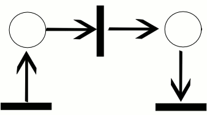
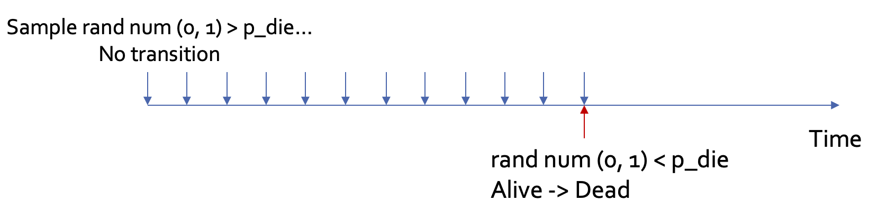
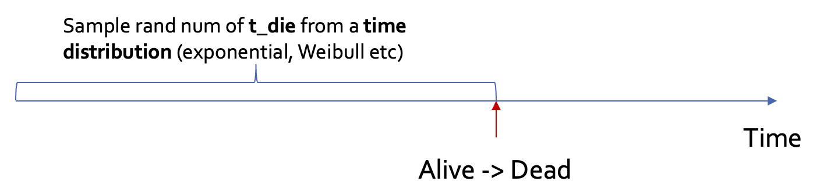
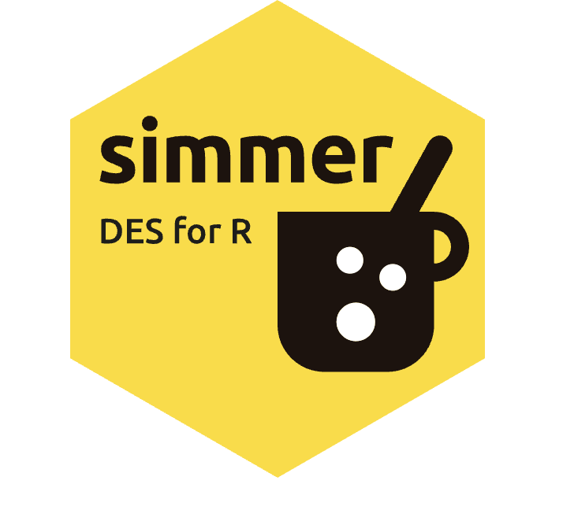
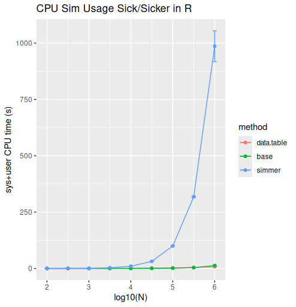

| Concept | Definition | Examples |
|---|---|---|
| Tokens | Represent patients or units flowing through the simulation, carrying attributes. | A 67-year-old woman with Stage III colorectal cancer. |
Part 2. Concepts in Discrete Event Simulation
Imagine a car race in which each patient represents a driver navigating a complex circuit with multiple checkpoints, pit stops, and potential hazards.
In this framework, each driver follows its own unique journey (“trajectory”) through a race course, with discrete events corresponding to key moments like crossing timing markers, making pit stops for fuel and tire changes, or experiencing unexpected mechanical issues that require assistance.
In a DES, we track not only each car’s total race time but also the precise timing and sequence of significant events.
When cars enter the pit lane …
How long cars wait for available mechanics …
Whether a driver experiences a delay due to track congestion…
… and how these realities affect their race performance (costs, health outcomes) and resource consumption.


To understand and construct a DES it’s important to define several concepts:
Tokens represent an individual entity (typically a patient) that flows through the simulation over time.
When it comes to visualising a DES it’s common to use solid shapes like squares and circles.
A patient is represented by a solid black circle …
… while a hospital is represented by a solid red rectangle.
In that way, we can both conceptualize and model instances where hospital capacity is constrained, creating queues and wait times that delay time to treatment.
Tokens take on attributes (e.g., age, gender) that are either fixed throughout the model, or that change as they make their way through the model.
For example, suppose we aim to model different strategies for treating colon cancer. A token might represent a 67-year-old woman with Stage III colorectal cancer.
Tokens reside in Places, which indicate system states or conditions (e.g., “Healthy,” “Sick,” “Dead”)
For many health decision models, places are simply health states.
But for a resource-constrained model, places could also represent hospitals, treatment slots, etc.
Now suppose we want to track this patient’s progression through diagnosis, treatment (e.g., surgery, chemo), remission, and potential relapse. These are examples of events/transitions in a DES model.
Transitions are often denoted by bars or rectangles that denote discrete system state changes.
For example, disease incidence would be captured by a transition.
The flow between places and transitions is denoted by an arc.
These visual tools can be combined into a Petri net diagram that represents the flow of resources, entities, and control through a system over time. Petri nets are particularly useful for depicting concurrent processes and shared resources.
Formally, a Petri net is a directed bipartite graph that describes a distributed system.
In the example shown to the right, each transition moves a token through the system.
Our ultimate objective is to build up a DES based on the following Petri net diagram for the progressive disease model with resource constraints.
Once we have represented the system, we need some way to record the experience of each token (i.e., patient) in the system. This is accomplished via a trajectory
A trajectory captures the specific sequence of events a patient experiences.
As the token/patient progresses through the model, they “consume” resources.
You can think of resources as things we want to track, such as time in the model, time in the healthy state, waiting times for treatment, etc.
In that sense, resources can be either subject to constraints, or not.
A patient’s experience of time in a place or health state, for example, can be thought of as unconstrained resource: one patient’s experience of time does not preclude another patient in the model from also experiencing the passage of time.
Conversely, in a resource-constrained DES we might want to put limits on the total number of patients who can receive treatment at one time. This both helps better represent real-world scenarios, and also facilitates additional policy strategy modeling (e.g., expansion of treatment slots, staffing, or hospital beds to reduce wait times).
Concepts

| Concept | Definition | Examples |
|---|---|---|
| Tokens | Represent patients or units flowing through the simulation, carrying attributes. | A 67-year-old woman with Stage III colorectal cancer. |
| Places | Indicate system states or conditions (e.g., “Healthy,” “Sick,” “Under Treatment”) | Sick disease state |

| Concept | Definition | Examples |
|---|---|---|
| Tokens | Represent patients or units flowing through the simulation, carrying attributes. | A 67-year-old woman with Stage III colorectal cancer. |
| Places | Indicate system states or conditions (e.g., “Healthy,” “Sick,” “Under Treatment”) | Sick disease state |
| Events/transitions | Discrete time points when system state changes; trigger resource use and transitions. | - Disease incidence - Disease progression - Death from disease or background causes - Enter treatment waiting list - Acute event (e.g., hospitalization) |

| Element | Type | Description |
|---|---|---|
| Place | Indicate system states or conditions (e.g., “Healthy,” “Sick,” “Under Treatment”). | |
| Transition | Signify events that may cause a change in state (e.g., “disease incidence,” “death,” “recovery”). | |
| Token | Represent individual entities (e.g., patients, hospital beds or available treatment slots) that flow through the net. | |
| Arc | Show the flow between places and transitions. |
| Concept | Definition | Examples |
|---|---|---|
| Tokens | Represent patients or units flowing through the simulation, carrying attributes. | A 67-year-old woman with Stage III colorectal cancer. |
| Places | Indicate system states or conditions (e.g., “Healthy,” “Sick,” “Under Treatment”) | Sick disease state |
| Events/transitions | Discrete time points when system state changes; trigger resource use and transitions. | - Disease incidence - Disease progression - Death from disease or background causes - Enter treatment waiting list - Acute event (e.g., hospitalization) |
| Trajectories | The sequence of events and states a token experiences during the simulation. | Patient progresses from diagnosis → treatment → remission → relapse → death |
| Concept | Definition | Examples |
|---|---|---|
| Tokens | Represent patients or units flowing through the simulation, carrying attributes. | A 67-year-old woman with Stage III colorectal cancer. |
| Places | Indicate system states or conditions (e.g., “Healthy,” “Sick,” “Under Treatment”) | Sick disease state |
| Events/transitions | Discrete time points when system state changes; trigger resource use and transitions. | - Disease incidence - Disease progression - Death from disease or background causes - Enter treatment waiting list - Acute event (e.g., hospitalization) |
| Trajectories | The sequence of events and states a token experiences during the simulation. | Patient progresses from diagnosis → treatment → remission → relapse → death |
| Resources | Entities required or consumed by events; may be limited (constrained) or unlimited (unconstrained). | - Total time in healthy state - Total time in sick state - Number of available hospital beds |
Computational Considerations
We established earlier that DES can significantly outperform microsimulation—needing far fewer simulated patients to converge to the “truth.”
This is because DES does not suffer from truncation bias, or the increase in variance in a model because the precise timing of events is not rounded to the cycle boundary.
Recall that you can reduce truncation bias in microsimulation by using a shorter cycle length. But this does not really ease the computational demands. Why?
A microsimulation must take a snapshot of occupancy at every cycle—even though in many cycles, no event will have occurred!.
In a DES, once an event occurs, we skip forward to the next event—whenever it may occur in the future!
This saves us a lot on computational demands, since we don’t have to check in every cycle.
There are some other relevant computational considerations, however…
We have built a modelling platform with health economic wrapper functions based on the R package simmer.
simmer is a process-oriented and trajectory-based DES platform that facilitates generic DES models.
A simmer DES framework executes all trajectories at the same time, evaluating them all to check for any resource contention.
Thus, there is a computational penalty for handling resource contention–and this penalty remains fixed regardless of whether the underlying model has resource constraints!
To put this issue in perspective, independently-run simulations are \(\mathcal{O}(n)\) in complexity of execution.
This means the total runtime / memory utilisation is proportional to the number of patients simulated.
A DES model run in simmer requires the fixed cost of resource contention checking.
That is, the model constantly checks questions like “Can Patient A get a bed when Patient B is already using one?”
So if you don’t have constrained resources (e.g., hospital beds), it’s like having a bouncer at the door of an empty venue.
simmer manages this utilizing a “heap” that makes the complexity \(\mathcal{O}(n \log n)\)
Our convergence plot earlier uses the data.table package and programs the DES directly.
But if we shift to simmer, model performance drags a bit more.
With all that said, a simmer model run for a single strategy in the example progressive disease model we’ll run takes about 75 seconds with 10,000 patients.




